Araucaria
El árbol de Misiones, en su silueta más fiel.
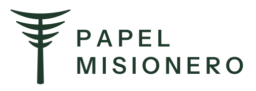
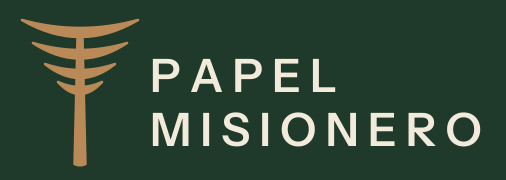
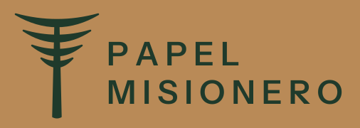
Concepto
Por qué cambió
En la primera versión, las ramas curvadas hacia arriba generaban una lectura ambigua: el símbolo podía interpretarse como una figura distinta a un árbol. Volvimos a la morfología real del pino Paraná adulto, cuya silueta es única en el paisaje misionero: un fuste recto y muy alto, coronado por una copa plana en forma de cáliz, construida por pisos de ramas que sostienen el follaje en sus extremos.
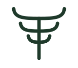
El follaje se dibuja como capas llenas y ligeramente cóncavas que forman el cáliz característico de la especie. La silueta se lee como árbol aun a distancia.
El tronco ocupa más de la mitad de la altura y se afina hacia arriba, como en el árbol adulto. La proporción elimina lecturas ambiguas y aporta solidez.
Las capas apiladas de la copa evocan los pliegos de papel y las capas de una bolsa multipliego. El árbol y el producto conviven en un mismo trazo.
Versiones
Sistema de marca
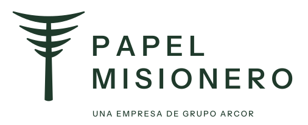

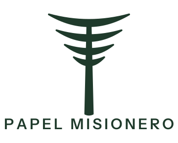


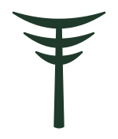

Escala
De la fachada al favicon
El símbolo a distintos tamaños. Debajo de 24 px se usa la versión reducida, diseñada para mantener la lectura.
Versión completa
Aplicaciones
En uso
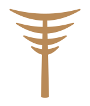
Anillos
El papel que se enrolla y se vuelve marca.
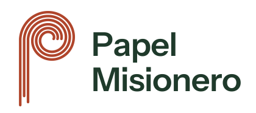
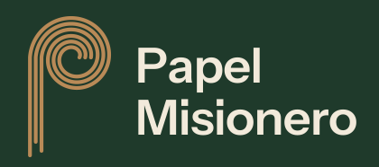
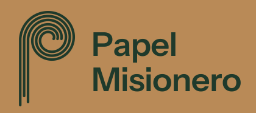
Concepto
Por qué cambió
El concepto de los anillos de crecimiento convertidos en bobina fue bien recibido, pero la primera versión resultaba geométrica y distante: hablaba de círculos más que de papel. En esta instancia el símbolo se construye con la materia misma del producto. La P ya no está formada por anillos cerrados: es una espiral, la forma real que adopta un pliego al enrollarse en una bobina.
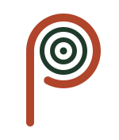
El pliego se enrolla sobre sí mismo y se desenrolla para formar el fuste de la P. Es el gesto de la bobina al entrar en la máquina: el papel en movimiento.
El trazo se divide en tres hebras paralelas: la fibra larga de pino que da resistencia al kraft, y los pliegos que componen cada bolsa multipliego.
Las hebras terminan a distinta altura, como el borde de un papel rasgado donde asoman sus fibras. Un detalle que vuelve tangible la materia.
Versiones
Sistema de marca
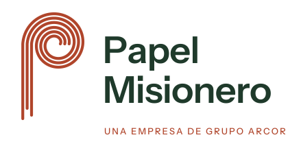

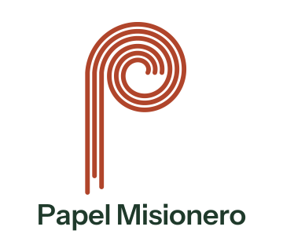


Escala
De la fachada al favicon
El símbolo a distintos tamaños. Debajo de 32 px se usa la versión reducida, diseñada para mantener la lectura.
Versión completa
Aplicaciones
En uso
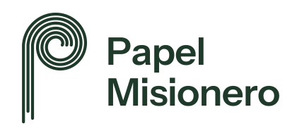
Lado a lado
Dos caminos sólidos para decidir.
Araucaria preserva la memoria de la marca y la proyecta con una silueta inconfundible del territorio. Anillos construye un signo nuevo y propio, nacido del producto y su materia. Ambos comparten paleta, tipografía y lógica de sistema.
Próximos pasos
Cómo seguimos
- Elección del camino definitivo junto al equipo de Cartocor.
- Pruebas de impresión flexográfica a una tinta sobre sack kraft y kraftliner.
- Ajuste óptico final del símbolo y del logotipo, y archivos de producción.
- Validación con la Fundación Selva Misionera y diálogo con las comunidades de la reserva.
- Manual de identidad y aplicaciones: bolsas, bobinas, flota, señalética, indumentaria y digital.
Primera instancia
De cinco caminos a dos.
La primera presentación exploró cinco caminos a partir de la investigación sobre la compañía y su territorio. Avanzaron Araucaria, por su continuidad con la identidad vigente y su arraigo territorial, y Anillos, por su capacidad de diferenciación.
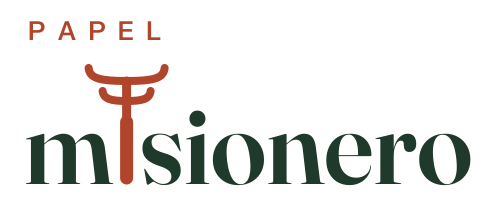
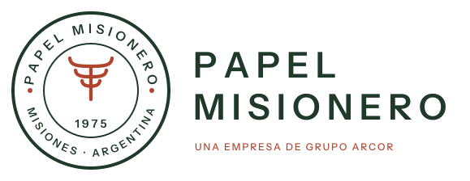
Punto de partida
Identidad vigente
La araucaria y la sigla PM son activos con memoria. Ambos caminos seleccionados preservan el árbol o la inicial como ancla de la marca.